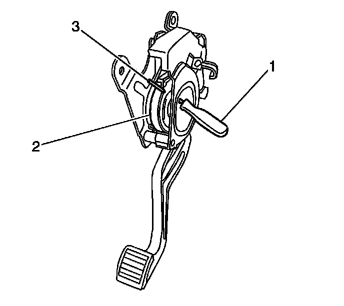

Park Brake Cable Adjuster Enabling
Parking Brake Cable Adjuster Enabling
1. Hold the park brake pedal in the FULL upward position.

2. Pull rearward on the front park brake cable until the tension is released from the tool (1) installed in the pedal assembly.
3. Remove the tool (1).
4. Slowly release the park brake cable until it returns to its original position.
5. Release the park brake pedal.
6. Lower the vehicle.
7. Apply and release the park brake pedal 3 times.